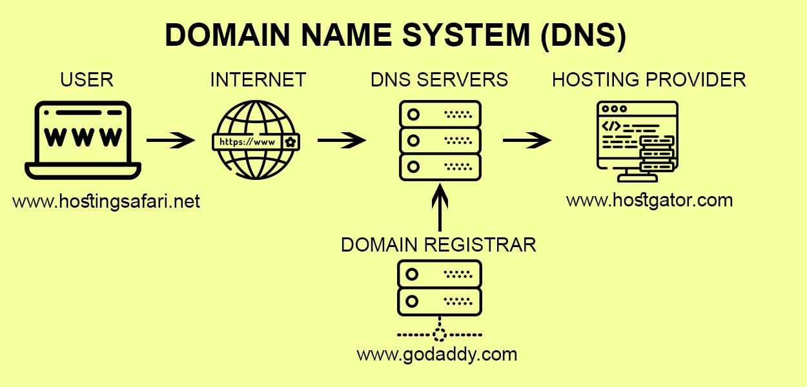

اسم الطالبة: مريم عصام عبد المنعم فهيم
2501002: الرقم الجامعي
عشان نعمل موقع على الانترنت بنحتاج حاجتين مهمين هما الدومين والاستضافة
الدومين هو عنوان الموقع اللي بنكتبه في المتصفح مثل google.com وكل موقع ليه دومين خاص بيه
الاستضافة هي مساحة على سيرفر بنحط عليها ملفات الموقع والصور عشان الناس تقدر تشوف الموقع في اي وقت

1- الاستضافة المشتركة: سعرها رخيص ومناسبة للمواقع الصغيرة
2- استضافة VPS: ادائها اعلى ومناسبة للمواقع المتوسطة
3- الاستضافة السحابية: مرنة ومناسبة للمواقع الكبيرة
الدومين هو الاسم والعنوان والاستضافة هي المكان اللي فيه ملفات الموقع
hostinger.com
godaddy.com
developer.mozilla.org